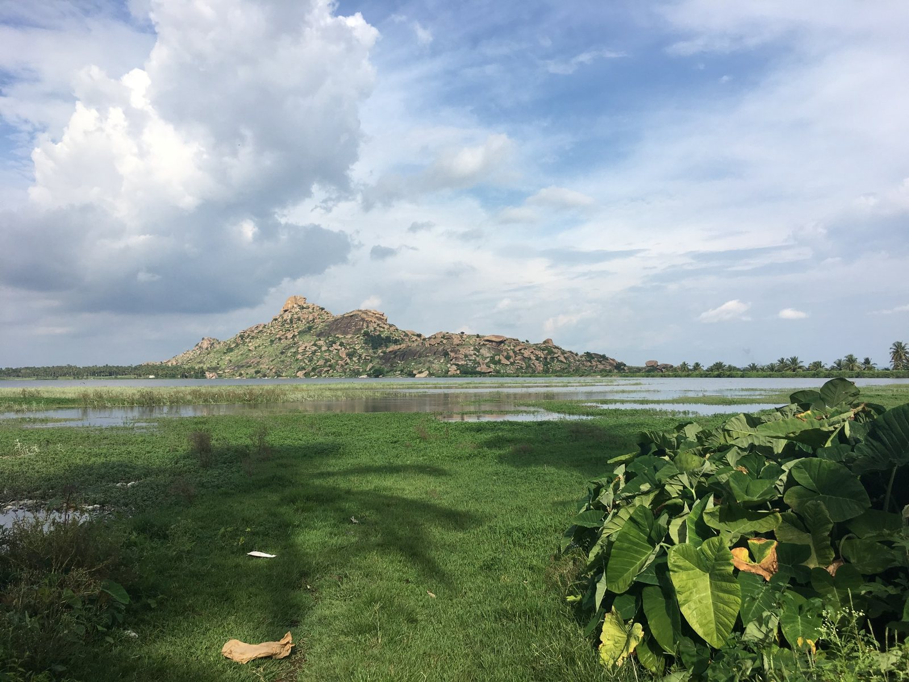
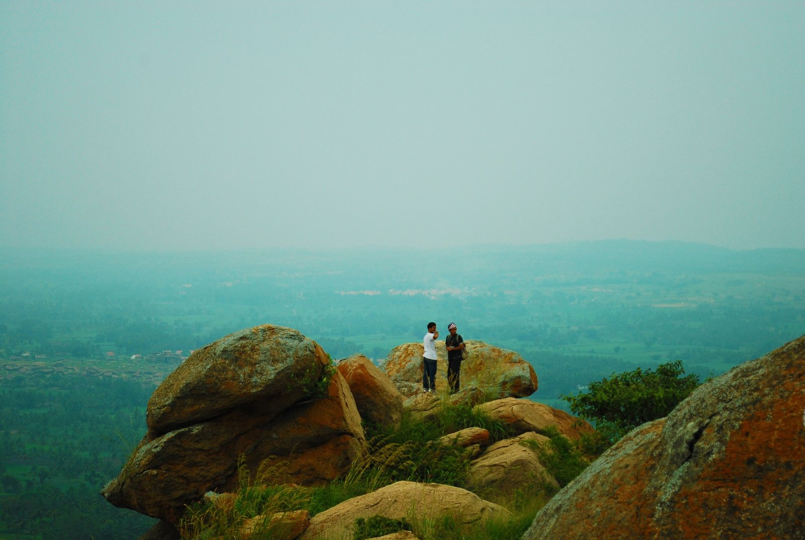
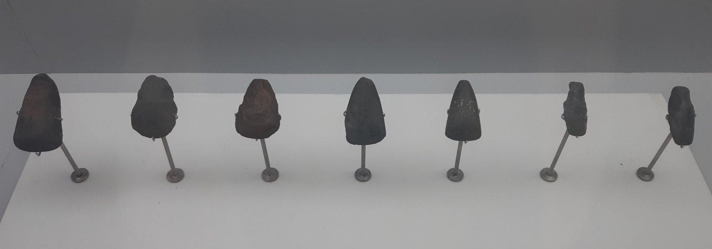
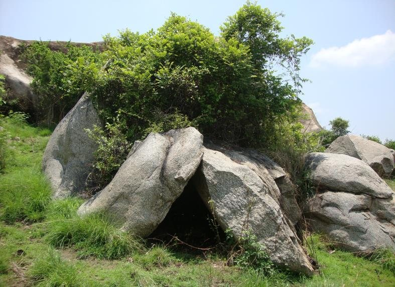
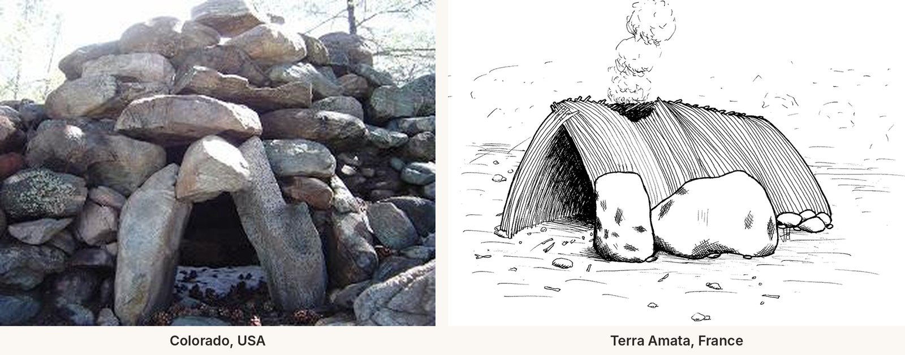
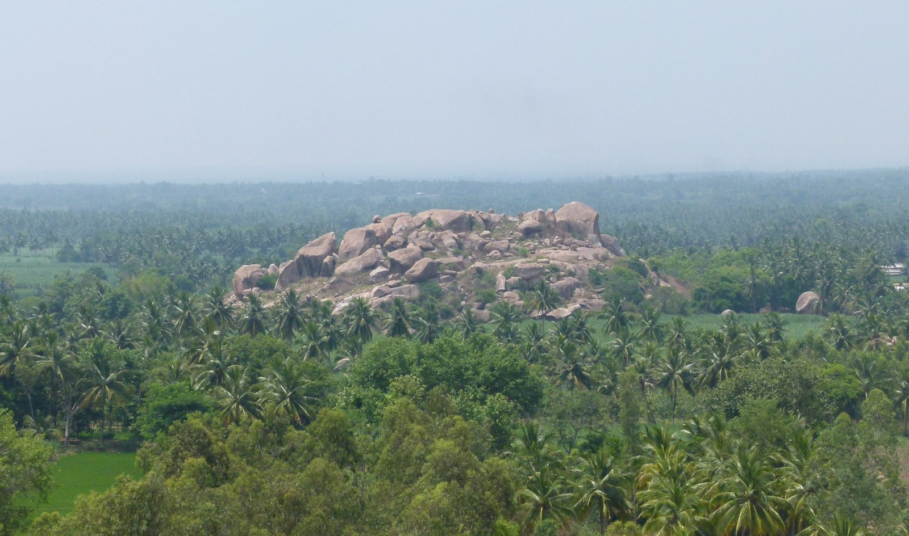
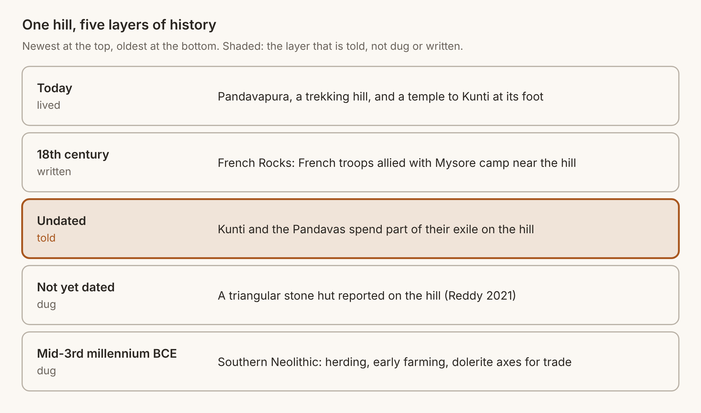
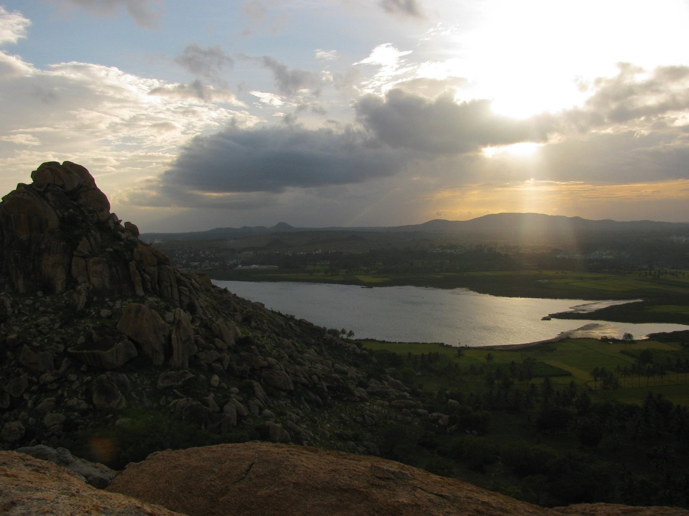

The Hill of Kunti
A pair of granite hills in Mandya district carries two histories at once, one dug out of the ground and one told by the town below. Which one is right?

Most hills in Karnataka are just hills. They are granite and scrub, and nobody has dug into them or told a story about them. But a few hills are different, because they carry two kinds of history at once. The first kind is found in the ground. People lived on these hills long ago, and the tools and shelters they left behind can still be dug up and dated. The second kind is found in the stories that people living around the hill still tell. Kunti Betta, a pair of rocky hills near the town of Pandavapura in Karnataka’s Mandya district, is one of these few hills. I first wrote about Kunti Betta in 2022, in a site report for a college course. Back then, there was one question I could not answer. When an archaeologist and a person from Pandavapura look at the same hill, they see two very different things. So which one of them is right?
The hill
Kunti Betta stands about 2,882 feet (878 meters) above sea level, on the Deccan Plateau, the vast table land of lava rock that covers most of southern India (Reddy 2021). Southern Karnataka is full of bare granite hills like this one, rising out of flat farmland. The hill lies roughly 130 kilometers from Bengaluru, and not far from Thonnur Lake. In Kannada, betta means hill, and hence Kunti Betta is the hill of Kunti. Kunti was the mother of the Pandavas, and people here say she once lived on this hill.

What the stone says
The oldest layer of this hill’s history belongs to the wider region, in the period archaeologists call the Southern Neolithic. Archaeologists working on southern India have shown that “by the mid-third millennium BC, Southern Neolithic sites had a mixed economy of pastoralism and indigenous crop cultivation” (Boivin et al. 2008:183). These early communities made polished axes from dolerite, a hard dark stone, and they made them in a particular way. As Boivin and her colleagues put it, goods “were produced not for wealth accumulation, but specifically for exchange” (2008:183). Hence, a stone axe from this region was not only a tool. It was also a link in a network of trade that tied one hill to another.

The question is where Kunti Betta fits in that network. Botanical evidence suggests that plants were first domesticated in this region toward the Eastern Ghats, far to the east (Boivin et al. 2008:182). Kunti Betta lies deeper inside the plateau, where there is little evidence of early farming. Hence, the people who lived here were probably foragers, or had only just begun to grow crops, and they would have depended on stone tools for nearly everything they did. This is a likely picture, not a proven one. But it is where the evidence points.
In 2021, a stronger clue was published. Dr. Ramadasa Reddy, an associate professor at the Government First Grade College in Mysore, reported a stone hut on Kunti Betta. According to his report, the hut is triangular in shape, made by cutting stone slabs and leaning them against each other, with a heavy rock supporting them at the back and flat slabs fixed to the floor. Its doorway is 5.7 feet wide and 6.5 feet high (Reddy 2021:c461). Hence, the hut was most likely a home, as a doorway this tall was made for people to walk in and out of every day. But there is one problem. The hut has not yet been dated, and Reddy’s report does not give a date for it either. So we still do not know who built it, or when.

Reddy also compares the Kunti Betta hut to stone structures in other parts of the world, such as the stone huts of the San Luis Valley in Colorado and an ancient shelter at Terra Amata in southern France. While it is true that these comparisons are striking, they should be read carefully. The Terra Amata shelter is far older than anything on Kunti Betta, and it was built mostly of branches. The Colorado huts point the other way. When scientists dated the ground beneath their stones, the huts turned out to be only about 150 years old, built between roughly 1860 and 1890, most likely by people working on the railroad that came through the valley (Mahan et al. 2015). Hence, the comparison does not show that these places were connected. Rather, it shows that people in very different parts of the world needed shelter, and built it with whatever their land gave them.

What the story says
The people of Pandavapura tell a different history of the same hill. In the Mahabharata, the five Pandava brothers and their mother, Kunti, are forced into exile in the forest for many years. According to the people here, some of those years were spent on this very hill. Kunti, the story goes, loved this hill so much that it became one of her favorite places, and hence the hill carries her name and the town carries the name of her sons, Pandavapura, the town of the Pandavas. This is not a story limited to one hill. Across Karnataka, caves and rock shelters are linked to the Pandavas, including megalithic rock-cut caves on the state’s south-western coast that local people call caves of the Pandavas (IANS 2022).
To the archaeologist, such a story is not evidence. But it would be a mistake to dismiss it as “just a myth.” A story that a whole town has kept for generations is evidence of something else. The stone tells us that someone once lived on the hill (though not who they were), whereas the story tells us what the hill still means to the people around it.
A third layer: French Rocks
The hill has one more history, and it is much more recent. In the eighteenth century, French soldiers who came to help Hyder Ali and Tipu Sultan, the rulers of Mysore, against the British set up camp in this area, and the town, which the people here had called Hirode, came to be known as French Rocks (Rao 1930; Krishnamurthy 1989; Deccan Chronicle 2018). The name French Rocks lasted well into British times, and it was only after India’s independence that the town came to be called Pandavapura. Hence, Pandavapura was not an old name that came back, rather a new name taken from the story of the hill. Even today, the land around the hill keeps traces of that period, including a cemetery near Kunti Betta where a British soldier lies buried (Satya 2020).


Seen together, the hill holds five layers of history, and only one of them is told rather than dug up or written down.
Two ways of seeing one hill
Coming back to the question I started with, the archaeologist and the town do not have to disagree. The reason is that the stone and the story answer different questions. The archaeologist asks how people lived here, and the stone hut and the axes answer that question. The town asks who it is and where it comes from, and the story of Kunti answers that question. It is even possible that the two histories are connected, and that people who found old stone shelters on the hill explained them through the greatest story they knew. I cannot prove that, but it is the kind of question that only becomes visible when the two histories are placed side by side.
To the archaeologist, Kunti Betta is a habitat of prehistoric people. But to the people of Pandavapura, the hill is much more than that. It is a visible piece of their beliefs, and a keepsake of a story that still binds their culture together. Hence, a hill like Kunti Betta deserves to be studied with both kinds of eyes. Anyone who climbs it today walks past the traces of people who lived there thousands of years ago, on a hill that a whole town believes once gave shelter to Kunti.

Sources
- Boivin, Nicole, Dorian Fuller, Ravi Korisettar, and Michael Petraglia. 2008. “First Farmers in South India: The Role of Internal Processes and External Influences in the Emergence and Transformation of South India’s Earliest Settled Societies.” Pragdhara 18: 179–199.
- Deccan Chronicle. 2018. “Pandavapura: Where Lies Buried a Glorious Relic of French History.” Deccan Chronicle, December 16, 2018. https://www.deccanchronicle.com/lifestyle/travel/161218/pandavapura-where-lies-buried-a-glorious-relic-of-french-history.html
- IANS. 2022. “Unique Megalithic Burial Site Dating Back to 800 BCE Found at ‘Cave of Pandavas’ in K’taka.” HinduPost. https://hindupost.in/history/unique-megalithic-burial-site-dating-back-to-800-bce-found-at-cave-of-pandavas-in-ktaka/
- Krishnamurthy, M. S. 1989. “Kuntibetta: An Archaeological Note.” Itihasa Darshana 4. Reposted by Karnataka Itihasa Academy, March 21, 2017. https://karnatakaitihasaacademy.org/kuntibetta-an-archaeological-note/
- Mahan, Shannon, Rebecca Donlan, and Barbara Kardos. 2015. “Luminescence Dating of Anthropogenic Features of the San Luis Valley, Colorado: From Stone Huts to Stone Walls.” Quaternary International 362: 50–62. https://doi.org/10.1016/j.quaint.2014.09.067
- Rao, C. Hayavadana, ed. 1930. Mysore Gazetteer. New ed. Vol. 5. Bangalore: Government Press. https://dspace.gipe.ac.in/xmlui/bitstream/handle/10973/33311/GIPE-249328.pdf
- Reddy, Ramadasa. 2021. “A Rare Discovery of Stone Hut at Kunti Betta.” International Journal of Creative Research Thoughts 9 (10): c461–c463. https://ijcrt.org/papers/IJCRT2110288.pdf
- Satya, Gouri. 2020. “History and Myth Pervade the Trek up Kunti Betta.” Deccan Herald, December 4, 2020. https://www.deccanherald.com/india/karnataka/history-and-myth-pervade-the-trek-up-kunti-betta-923591.html
Image credits
- Image 1. Photo: Prashanthns, via Wikimedia Commons, CC BY-SA 4.0. Resized. Source: https://commons.wikimedia.org/wiki/File:Pandavapura_lake_with_Kunti_betta_(hill)_view.jpeg
- Image 2. Photo: Ashwini Sukhdeve, via Wikimedia Commons, CC BY-SA 3.0. Resized. Source: https://commons.wikimedia.org/wiki/File:LostTrek.jpg
- Image 3. Photo: $nowPearl, via Wikimedia Commons (Wiki Loves Museums India 2022), CC BY 3.0. Resized. Source: https://commons.wikimedia.org/wiki/File:Celts.jpg
- Image 4. Photo: S. G. Ramadasa Reddy, from Reddy (2021), fig. 1. Source: https://ijcrt.org/papers/IJCRT2110288.pdf
- Image 5. Left: as reproduced in Reddy (2021), fig. 2. Right: drawing by José-Manuel Benito, via Wikimedia Commons, public domain. Source: https://ijcrt.org/papers/IJCRT2110288.pdf and https://commons.wikimedia.org/wiki/File:Terra-Amata-Hut.gif
- Image 6. Photo: Shyamal, via Wikimedia Commons, CC BY-SA 3.0. Resized. Source: https://commons.wikimedia.org/wiki/File:KunthiBetta.jpg
- Image 7. Diagram made for this post.
- Image 8. Photo: Prashanth shivanna, via Wikimedia Commons, CC BY-SA 4.0. Resized. Source: https://commons.wikimedia.org/wiki/File:KuntiBetta01.jpg
_view.jpeg){kind=link}